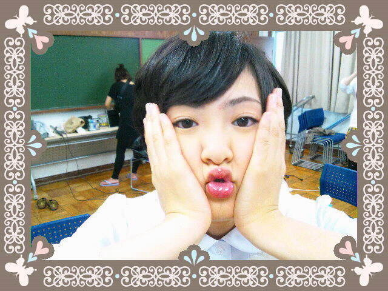

| 2012/07 04 Wed | 萌え。ヽ( ・∀・)ノ |
まずね遅れましたがジャンプへの思いを叫ばしてくれヽ(・∀・)ノ
今回は生駒の萌え心をくすぐったスケットダンスについて叫ばしてくれ。
あんね
椿がねもうっ
なんでこんなにピーなのでしょう。
中馬先生のはつごにょごにょ...
デージーのキャラがごにょごにょ...
キリはいつも通りでよろしい♪
ボッスンがピピピピ...
ヒメコもそうなるよね!!
てか椿
もともと好きなキャラでしたが今回でもっと好きになりました！

えー
ここまで見てくださった皆様。
大変意味不明だったと思います。
今週のジャンプ読んだ方は大体理解して頂けたかと思いますが、途中で効果音を入れたりとネタバレだけはしないようにと自分なりに頑張りました。
でもねただ私は純粋に漫画が好きなんです。
だからちょっと変わってる所が数えきれないほどあるけど許してね!!

おねがいしまーす

へばなっ!!
(上の写真は最近自分の中で流行ってる行動です。)
コメント(309)
2012/07/04 22:12